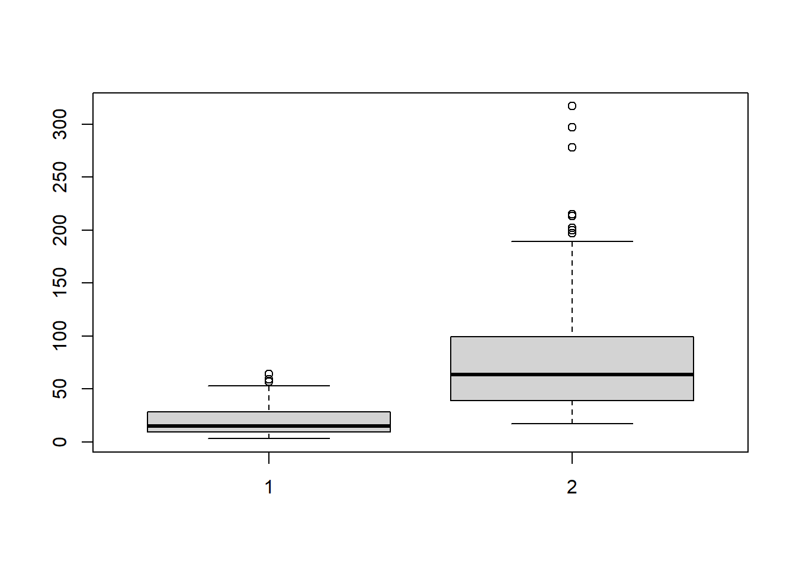

R中的统计推断
Boylad · 2018-10-29
获取置信区间
首先使用函数rnorm生成一个正态分布：
set.seed(123)
population <- rnorm(1000, mean = 10, sd = 3)
dens <- density(population)
plot(dens, col = "red", main = "A density plot of normal distribution")然后我们从全量数据中采取100个样本：
samp <- sample(population, 100)
mean(samp)
## [1] 10.20587
sd(samp)
## [1] 2.799184现在，我们可以获取置信度为99%时的Z-分位数：
qnorm(1 - 0.01/2) #qnorm(0.995)
## [1] 2.575829我们可以计算标准误差，并估计全量平均值的上下界：
sde <- (sd(samp) / sqrt(100)) #均方误差
sde
## [1] 0.2799184
upper <- mean(samp) + qnorm(0.995) * sde
upper
## [1] 10.92689
lower <- mean(samp) - qnorm(0.995) * sde
lower
## [1] 9.484849给密度图中上下边界之间的区域添加阴影：
plot(dens, col = "red", main = "A density plot of normal distribution")
polygon(c(lower, dens$x[dens$x > lower & dens$x < upper], upper),
c(0, dens$y[dens$x >= lower & dens$x <=upper], 0),
col = "red", density = c(10, 50), angle = c(-45, 45))我们也可以找到数值Z，使得标准正态曲线下从-Z到Z的面积是0.95：
qnorm(1 - 0.05 / 2)
## [1] 1.959964查看计算95%的置信区间时的结果：
upper2 <- mean(samp) + qnorm(0.975) * sde
upper2
## [1] 10.7545
lower2 <- mean(samp) - qnorm(0.975) * sde
lower2
## [1] 9.657241我们可以给95%的置信区间设成蓝色：
plot(dens, col = "red", main = "A density plot of normal distribution")
polygon(c(lower2, dens$x[dens$x > lower2 & dens$x < upper2], upper2),
c(0, dens$y[dens$x >= lower2 & dens$x <= upper2], 0),
col = "blue")接着让我们看一下如何获取泊松分布的置信区间：
set.seed(123)
population2 <- rpois(1000, lambda = 3)
mean(population2)
## [1] 2.967
hist(population2, main = "A histogram of A Poisson distribution")这s里，我们从全量数据中采集100个示例样本：
sample2 <- sample(population2, 100)我们继续抽样1000次，生成1000个样本平均值：
sample_mean <- rep(NA, 1000)
for(i in 1:1000){
sample_mean[i] <- mean(sample(sample2, replace = TRUE))
}最后，我们可以考虑使用2.5%样本分位数作为下边界，97.5%样本分位数作为上边界，获取95%置信区间：
upper3 <- quantile(sample_mean, 0.975)
upper3
## 97.5%
## 3.36
lower3 <- quantile(sample_mean, 0.025)
lower3
## 2.5%
## 2.65除了使用多次重复的抽样方法以外，我们也可以使用boot程序包中的函数boot.ci获取置信区间：
library(boot)我们可以使用函数boot重复抽样数据：
boot.mean <- function(x, i){boot.mean <- mean(x[i])}
z <- boot(sample2, boot.mean, R = 2000)最后，我们可以使用boot.ci获取多次重复抽样的置信区间(我们重复抽样sample2数据2000次获取样本平均值，然后得到不同度量下的95%置信区间)：
boot.ci(z)
## Warning in boot.ci(z): bootstrap variances needed for studentized intervals
## BOOTSTRAP CONFIDENCE INTERVAL CALCULATIONS
## Based on 2000 bootstrap replicates
##
## CALL :
## boot.ci(boot.out = z)
##
## Intervals :
## Level Normal Basic
## 95% ( 2.624, 3.349 ) ( 2.620, 3.340 )
##
## Level Percentile BCa
## 95% ( 2.64, 3.36 ) ( 2.63, 3.35 )
## Calculations and Intervals on Original Scale执行Z-检验
首先，收集20瓶软饮料的容量(以毫升为单位)。假设这些数据来自于一个正态分布的全量数据，其平均值等于300，标准差等于10：
pop_mean <- 300
pop_sd <- 10
soft_drink <- c(278, 289, 291, 291, 291, 285, 295, 278, 304, 287, 291,
287, 288, 300, 309, 280, 294, 283, 292, 306)我们可以计算20瓶软饮料容量的标准误差和Z分数：
sde <- pop_sd / sqrt(length(soft_drink))
z <- (mean(soft_drink) - pop_mean) / sde
z
## [1] -4.047283我们可以从Z分数中计算单边p值：
pnorm(z)
## [1] 2.590779e-05
1 - pnorm(z)
## [1] 0.9999741我们也可以从Z分数中计算双边p值：
p <- (1 - pnorm(abs(z))) * 2
p
## [1] 5.181557e-05我们可以创建一个函数执行Z-检验和单/双边p值计算：
z.test <- function(x, pop_mean, pop_sd, side = "twoside"){
sde <- pop_sd / sqrt(length(x))
z <- (mean(x) - pop_mean) / sde
switch(side,
twoside = {
p <- (1 - pnorm(abs(z))) * 2
},
less = {
p <- pnorm(z)
},
{
p <- 1 - pnorm(z)
}
)
return(list(Z = z, p =p))
}现在我们可以从Z分数计算单边p值和双边p值：
z.test(soft_drink, 300, 10)
## $Z
## [1] -4.047283
##
## $p
## [1] 5.181557e-05
z.test(soft_drink, 300, 10, 'less' )
## $Z
## [1] -4.047283
##
## $p
## [1] 2.590779e-05执行学生T-检验
首先，我们使用箱线图对体重样本向量进行可视化：
weight <- c(84.12, 85.17, 62.18, 83.97, 76.29, 76.89, 61.37, 70.38,
90.98, 85.71, 89.33, 74.56, 82.01, 75.19, 80.97, 93.82,
78.97,73.58, 85.86, 76.44)
boxplot(weight, main = "A boxplot of weight")
abline(h = 70, lwd = 2, col = "red")我们可以执行统计分析，验证样本的平均体重是否在70以上(可以很清楚地看到我们的样本体重要高于全量平均体重’红线’，低的p值0.0001056(<0.05)说明我们应该拒绝“城市居民的平均体重高于全国人民平均体重”的空假设)：
t.test(weight, mu = 70)
##
## One Sample t-test
##
## data: weight
## t = 4.873, df = 19, p-value = 0.0001056
## alternative hypothesis: true mean is not equal to 70
## 95 percent confidence interval:
## 75.35658 83.42242
## sample estimates:
## mean of x
## 79.3895接着，我们在一个箱线图中对两组体重样本可视化：
weight2 <- c(69.35, 63.21, 71.57, 73.23, 65.26, 60.32, 66.96, 59.78,
69.71, 76.88, 81.39, 64.9, 75.53, 65.05, 77.21, 64.9,
71.93, 75.04, 74.29, 77.53)
boxplot(list(weight, weight2), main = "A boxplot of two weight samples")
abline(h = mean(weight), lwd = 2, col = "blue")
abline(h = mean(weight2), lwd = 2, col = "red")我们执行双样本T-检验，判断两组样本的平均值是否相同(双样本T-检验允许我们检验两组独立样本的平均值是否相同，p值为0 0004592(<0.05),检验提供了拒绝原假设的证据，即城市居民的平均体重不同于农村居民)：
t.test(weight, weight2)
##
## Welch Two Sample t-test
##
## data: weight and weight2
## t = 3.8717, df = 34.497, p-value = 0.0004592
## alternative hypothesis: true difference in means is not equal to 0
## 95 percent confidence interval:
## 4.367613 14.007387
## sample estimates:
## mean of x mean of y
## 79.3895 70.2020执行精确二项检验
假设一种游戏，赌徒可以投掷骰子，得到6点就算赢。除了这个规则，赌徒还带来了自己的骰子。如果赌徒想在游戏中作弊，他会使用灌铅的骰子提高赢的几率。因此，如果我们观测到赌徒在315次骰子中赢了92次，我们就可以通过精确的二项检验，断定骰子是否对大家都公平(过小的p值拒绝了“骰子是公平的”这个空假设)：
binom.test(x = 92, n = 315, p = 1 / 6)
##
## Exact binomial test
##
## data: 92 and 315
## number of successes = 92, number of trials = 315, p-value = 3.458e-08
## alternative hypothesis: true probability of success is not equal to 0.1666667
## 95 percent confidence interval:
## 0.2424273 0.3456598
## sample estimates:
## probability of success
## 0.2920635执行Kolmogorov-Smirnov检验
Kolmogorov-Smirnov检验(K-S检验)是一种非参数的、面向连续概率分布等价性的统计检验方法。我们可以使用它来比较样本和参考概率(单样本K-S检验)，也可以直接比较两组样本(双样本K-S检验)。这种检验方法基于经验累积分布函数(Empirical Cumulative Distribution Function, ECDF)。假设\(x_1,x_2,\cdots,x_n\)是n个随机样本看\(F_{n}(x)\)是经验分布函数，定义如下： \[F_{n}(x)=\frac{1}{n}\displaystyle\sum_{i=1}^nI\{x_i\le x\}\] 这里，\(I\{x_i\le x\}\)是示性函数函数，如果\(x_i\le x\)，函数就等于1，否则，函数等于0。Kolmogorov-Smirnov统计量(D)基于F(x)和\(F_n(x)\)之间的最大(其中\(sup_x\)表示上确界)垂直差异而定义。具体如下： \[D_n=sup_x|F_n(x)-F(x)|\] 如果\(D_n\)大于临界值，就拒绝样本服从指定分布的原假设。
我们使用单样本Kolmogorov-Smirnov检验来比较样本和参考概率。另外，双样本Kolmogorov-Smirnov检验可以比较两个数据集的累积分布。接下来，我们使用单样本Kolmogorov-Smirnov检验，验证x数据集(由函数rnorm生成)是否服从正态分布(大p值不拒绝原假设，即服从正态分布)：
set.seed(123)
x <- rnorm(50)
ks.test(x, "pnorm")
##
## One-sample Kolmogorov-Smirnov test
##
## data: x
## D = 0.073034, p-value = 0.9347
## alternative hypothesis: two-sided然后，我们可以生成均匀分布的样本数据：
set.seed(123)
x <- runif(n = 20, min = 0, max = 20)
y <- runif(n = 20, min = 0, max = 20)我们首先绘制生成数据集样本的ECDF图：
plot(ecdf(x), do.points = FALSE, verticals = TRUE, xlim = c(0, 20))
lines(ecdf(y), lty = 3, do.points = FALSE, verticals = TRUE)最后，我们对两组数据使用双样本Kolmogorov-Smirnov检验(大的p值不拒绝原假设，认为两个数据集可能来自同一个分布)：
ks.test(x, y)
##
## Two-sample Kolmogorov-Smirnov test
##
## data: x and y
## D = 0.2, p-value = 0.832
## alternative hypothesis: two-sided使用Pearson卡方检验
Pearson卡方检验是一种发现两种类别变量是否存在关系的统计检验方法。它适用于大型数据样本中的非配对数据。想要执行Pearson卡方检验，你需要保证输入样本满足两个假设：两组输入变量是类别型的，以及变量应当包含两个及以上的独立组。 假设在Pearson卡方检验中我们有两个变量A和B。原假设是变量A和变量B是独立的。卡方检验需要以下三个步骤：
计算卡方统计量\(X^2\)，其中r是列联表的行数，c是列联表的列数，\(O_{i,j}\)是观测到的频率计数，\(E_{i,j}\)是期望的频率计数。 \[X^2=\sum_{i=1}^r\sum_{j=1}^c\frac{(O_{i,j}-E_{i,j})^2}{E_{i.j}}\]
确定该统计量的自由度df。其中r是一个变量的水平数，c是另一个变量的水平数，自由度定义如下： \[df(r-1)\times(c-1)\]
比较\(X^2\)和带有自由度的卡方分布的临界值。
首先，建立包含男女吸烟者和不吸烟者人数的矩阵：
mat <- matrix(c(2047, 2522, 3512, 1919), nrow = 2,
dimnames = list(c("smoke", "non-smoke"), c("male", "female")))
mat
## male female
## smoke 2047 3512
## non-smoke 2522 1919然后，用马赛克图绘制男女吸烟者和不吸烟者比例：
mosaicplot(mat, main = "Portion of male and female smokers/non-smokeers", color = TRUE)
接着，在这个列联表上执行Person卡方检验，判断性别和吸烟习惯是否独立(小的p值拒绝了空假设，说明吸烟习惯与性别有关)：
chisq.test(mat)
##
## Pearson's Chi-squared test with Yates' continuity correction
##
## data: mat
## X-squared = 395.79, df = 1, p-value < 2.2e-16** 理解Wilcoxon秩和检验**
Wilcoxon秩和检验(Mann-Whitney-Wilcoxon)是一种非参数的检验方法。对于学生T-检验，它假设两组样本之间的差异是服从正态分布的(它也适用于两组样本服从正态分布的情况)。但是，当不能确定正态分布的时候，我们可以采用Wilcoxon秩和检验来做假设检验。它使用的原假设为，不假设正态分布的情况下，两个不同组的数据来自于同一个全量。首先，准备一个Facebook粉丝点赞数据：
likes <- c(17, 40, 57, 30, 51, 35, 59, 64, 37, 49, 39, 41, 17, 53, 21,
28, 46, 23, 14, 13, 11, 17, 15, 21, 9, 17, 10, 11, 13, 16,
18, 17, 27, 11, 12, 5, 8, 4, 12, 7, 11, 8, 4, 8, 7, 3, 9,
9, 9, 12, 17, 6, 10)然后利用这些数据绘制出柱状图：
hist(likes)现在，执行单样本Wilcoxon秩和检验，判断输入数据集的中位数是否等于30(小的p值拒绝原假设，说明粉丝点赞中位数不等于30)：
wilcox.test(likes, mu = 30)
##
## Wilcoxon signed rank test with continuity correction
##
## data: likes
## V = 314.5, p-value = 0.0006551
## alternative hypothesis: true location is not equal to 30然后，输入和绘制另一个Facebook粉丝页面点赞数据：
likes2 <- c(28, 152, 197, 25, 62, 39, 32, 202, 85, 74, 125, 32, 67, 29,
37, 297, 101, 45, 24, 63, 17, 92, 46, 60, 317, 85, 46, 61,
56, 59, 91, 54, 133, 87, 200, 28, 97, 28, 30, 103, 77, 78,
90, 159, 39, 46, 151, 278, 75, 124, 213, 35, 145, 68, 30,
71, 58, 52, 36, 61, 48, 31, 165, 93, 74, 30, 86, 88, 145,
21, 47, 167, 63, 55, 36, 215, 52, 84, 24, 189, 65, 44, 101,
36, 39, 98, 140, 32, 65, 33, 84, 61, 45, 40, 160, 64, 65,
41, 36, 165)
hist(likes2)我们也可以把两组粉丝点赞数据放在一个箱线图中：
boxplot(list(likes, likes2))
最后，执行双样本Wilcoxon秩和检验，确定两个粉丝页面的中位数是否相同(小的p值拒绝原假设，所以，两个粉丝页面的点赞数据并不来自于同一个全量)：
wilcox.test(likes, likes2)
##
## Wilcoxon rank sum test with continuity correction
##
## data: likes and likes2
## W = 426, p-value < 2.2e-16
## alternative hypothesis: true location shift is not equal to 0执行单因素方差分析
方差分析(Analysis of variance, ANOVA)探究类别型自变量和连续性因变量之间的关系，你可以使用方差分析判断几组数据的平均值是否相等，如果只有一个类别型变量作为自变量，你可以执行单因素方差分析。相反，如果有两个及以上类别型变量作为自变量，你应该执行双因素方差分析。首先，使用箱线图可视化数据：
data_scientist <- c(95694, 82465, 85001, 74721, 73923, 94552, 96723,
90795, 103834, 120751, 82634, 55362, 105086, 79361,
79679, 105383, 85728, 71689, 92719, 87916)
software_eng <- c(78069, 82623, 73552, 85732, 75354, 81981, 91162,
83222, 74088, 91785, 89922, 84580, 80864, 70465,
94327, 70796, 104247, 96391, 75171, 65682)
bi_eng <- c(62895, 72568, 67533, 66524, 60483, 69549, 62150, 53320,
66197, 79189, 64246, 76079, 53821, 69444, 75194, 73011,
71056, 63592, 61502, 59758)
salary <- c(data_scientist, software_eng, bi_eng)
profession <- c(rep("Data Scientist", 20), rep("Software Engineer", 20),
rep("BI Engineer", 20))
boxplot(salary ~ profession, xlab = "Profession", ylab = "Salary",
main = "Salary boxplots of different profession")然后，我们执行单因素方差分析，查看不同职业的工程师是否对应不同的收入平均值。我们使用函数oneway.test:(oneway.test的优先是可以使用Welch修正解决方差的非齐性。但是，它并没有像aov一样提供足够多的信息，也不提供post-hoc检验):
oneway.test(salary ~ profession)
##
## One-way analysis of means (not assuming equal variances)
##
## data: salary and profession
## F = 27.972, num df = 2.000, denom df = 35.291, p-value = 5.263e-08除了oneway.test，还有一个标准函数aov可以做单因素方差分析(两种检验较低的p值都拒绝了“不同职业的工程师有相同的收入平均值”)：
salary.aov <- aov(salary ~ profession)
summary(salary.aov)
## Df Sum Sq Mean Sq F value Pr(>F)
## profession 2 5.111e+09 2.555e+09 21.23 1.29e-07 ***
## Residuals 57 6.862e+09 1.204e+08
## ---
## Signif. codes: 0 '***' 0.001 '**' 0.01 '*' 0.05 '.' 0.1 ' ' 1函数aov生成的模型也可以生成类似拟合模型的汇总信息：
model.tables(salary.aov, "means")
## Tables of means
## Grand mean
##
## 79035.67
##
## profession
## profession
## BI Engineer Data Scientist Software Engineer
## 66406 88201 82501对于salary.aov模型，我们可以使用TukeyHSD进行post_hoc比较检验(因为单因素方差分析只能证明同一个全量数据内部的平均值是否有显著的差异，你还不知道那两组数据不同，因此，我们在单因素方差分析模型上使用TukeyHSD进行post-hoc比较检验。最终结果说明收入间的最大方差来自于数据科学家和商业智能工程师之间)：
salary.posthoc <- TukeyHSD(salary.aov)
salary.posthoc
## Tukey multiple comparisons of means
## 95% family-wise confidence level
##
## Fit: aov(formula = salary ~ profession)
##
## $profession
## diff lwr upr p adj
## Data Scientist-BI Engineer 21795.25 13445.609 30144.891 0.0000001
## Software Engineer-BI Engineer 16095.10 7745.459 24444.741 0.0000616
## Software Engineer-Data Scientist -5700.15 -14049.791 2649.491 0.2362768执行双因素方差分析
首先，加载engineer.csv中工程师收入数据：
setwd("C:\\Users\\Boylad\\Documents\\mydata\\R_for_Data_Science_Cookbook")
engineer <- read.csv("engineer.csv", head = TRUE)绘制基于职业和地区的收入箱线图：
par(mfrow = c(1, 2))
boxplot(Salary ~ Profession, data = engineer, xlab = 'Profession',
ylab = 'Salary', main = 'Salary v.s. Profession')
boxplot(Salary ~ Region, data = engineer, xlab = 'Regionn',
ylab = 'Salary', main = 'Salary v.s. Region')
你可以在函数boxplot中使用*操作符，生成一个基于Profession * Region交叉的收入箱线图：
boxplot(Salary ~ Profession * Region, data = engineer,
xlab = "Profession * Region", ylab = "Salary",
cex.axis = 0.7, main = "Salary v.s. Profession * Region")然后，我们使用交叉图刻画变量之间的关系：
interaction.plot(engineer$Region, engineer$Profession, engineer$Salary,
type = "b", col = c(1:3), leg.bty = "o", leg.bg = "beige",
lwd = 2, pch = c(18, 24, 22), xlab = "Region",
ylab = "Salary", main = "Interaction Plot")在职业和地区正交的情况下，对收入执行双因素方差分析(Profession和Region的p值，以及两者的正交都拒绝了原假设，即地区和职业都影响了一个工程师的收入)：
salary.anova <- aov(Salary ~ Profession * Region, data = engineer)
summary(salary.anova)
## Df Sum Sq Mean Sq F value Pr(>F)
## Profession 2 2.386e+10 1.193e+10 86.098 < 2e-16 ***
## Region 2 4.750e+09 2.375e+09 17.143 1.64e-07 ***
## Profession:Region 4 3.037e+09 7.593e+08 5.481 0.000355 ***
## Residuals 171 2.369e+10 1.385e+08
## ---
## Signif. codes: 0 '***' 0.001 '**' 0.01 '*' 0.05 '.' 0.1 ' ' 1与单因素方差分析类似，可以在双因素方差分析模型结果上执行post-hoc比较检验：
TukeyHSD(salary.anova)
## Tukey multiple comparisons of means
## 95% family-wise confidence level
##
## Fit: aov(formula = Salary ~ Profession * Region, data = engineer)
##
## $Profession
## diff lwr upr p adj
## Data Scientist-BI Engineer 27608.02 22527.33 32688.707 0.0000000
## Software Engineer-BI Engineer 18776.57 13695.88 23857.257 0.0000000
## Software Engineer-Data Scientist -8831.45 -13912.14 -3750.759 0.0001807
##
## $Region
## diff lwr upr p adj
## San Francisco-New York 12214.900 7134.209 17295.591 0.0000002
## Seattle-New York 8723.683 3642.993 13804.374 0.0002197
## Seattle-San Francisco -3491.217 -8571.907 1589.474 0.2380471
##
## $`Profession:Region`
## diff
## Data Scientist:New York-BI Engineer:New York 15092.65
## Software Engineer:New York-BI Engineer:New York 14010.80
## BI Engineer:San Francisco-BI Engineer:New York 1421.35
## Data Scientist:San Francisco-BI Engineer:New York 36380.45
## Software Engineer:San Francisco-BI Engineer:New York 27946.35
## BI Engineer:Seattle-BI Engineer:New York 2236.10
## Data Scientist:Seattle-BI Engineer:New York 35008.40
## Software Engineer:Seattle-BI Engineer:New York 18030.00
## Software Engineer:New York-Data Scientist:New York -1081.85
## BI Engineer:San Francisco-Data Scientist:New York -13671.30
## Data Scientist:San Francisco-Data Scientist:New York 21287.80
## Software Engineer:San Francisco-Data Scientist:New York 12853.70
## BI Engineer:Seattle-Data Scientist:New York -12856.55
## Data Scientist:Seattle-Data Scientist:New York 19915.75
## Software Engineer:Seattle-Data Scientist:New York 2937.35
## BI Engineer:San Francisco-Software Engineer:New York -12589.45
## Data Scientist:San Francisco-Software Engineer:New York 22369.65
## Software Engineer:San Francisco-Software Engineer:New York 13935.55
## BI Engineer:Seattle-Software Engineer:New York -11774.70
## Data Scientist:Seattle-Software Engineer:New York 20997.60
## Software Engineer:Seattle-Software Engineer:New York 4019.20
## Data Scientist:San Francisco-BI Engineer:San Francisco 34959.10
## Software Engineer:San Francisco-BI Engineer:San Francisco 26525.00
## BI Engineer:Seattle-BI Engineer:San Francisco 814.75
## Data Scientist:Seattle-BI Engineer:San Francisco 33587.05
## Software Engineer:Seattle-BI Engineer:San Francisco 16608.65
## Software Engineer:San Francisco-Data Scientist:San Francisco -8434.10
## BI Engineer:Seattle-Data Scientist:San Francisco -34144.35
## Data Scientist:Seattle-Data Scientist:San Francisco -1372.05
## Software Engineer:Seattle-Data Scientist:San Francisco -18350.45
## BI Engineer:Seattle-Software Engineer:San Francisco -25710.25
## Data Scientist:Seattle-Software Engineer:San Francisco 7062.05
## Software Engineer:Seattle-Software Engineer:San Francisco -9916.35
## Data Scientist:Seattle-BI Engineer:Seattle 32772.30
## Software Engineer:Seattle-BI Engineer:Seattle 15793.90
## Software Engineer:Seattle-Data Scientist:Seattle -16978.40
## lwr
## Data Scientist:New York-BI Engineer:New York 3398.181
## Software Engineer:New York-BI Engineer:New York 2316.331
## BI Engineer:San Francisco-BI Engineer:New York -10273.119
## Data Scientist:San Francisco-BI Engineer:New York 24685.981
## Software Engineer:San Francisco-BI Engineer:New York 16251.881
## BI Engineer:Seattle-BI Engineer:New York -9458.369
## Data Scientist:Seattle-BI Engineer:New York 23313.931
## Software Engineer:Seattle-BI Engineer:New York 6335.531
## Software Engineer:New York-Data Scientist:New York -12776.319
## BI Engineer:San Francisco-Data Scientist:New York -25365.769
## Data Scientist:San Francisco-Data Scientist:New York 9593.331
## Software Engineer:San Francisco-Data Scientist:New York 1159.231
## BI Engineer:Seattle-Data Scientist:New York -24551.019
## Data Scientist:Seattle-Data Scientist:New York 8221.281
## Software Engineer:Seattle-Data Scientist:New York -8757.119
## BI Engineer:San Francisco-Software Engineer:New York -24283.919
## Data Scientist:San Francisco-Software Engineer:New York 10675.181
## Software Engineer:San Francisco-Software Engineer:New York 2241.081
## BI Engineer:Seattle-Software Engineer:New York -23469.169
## Data Scientist:Seattle-Software Engineer:New York 9303.131
## Software Engineer:Seattle-Software Engineer:New York -7675.269
## Data Scientist:San Francisco-BI Engineer:San Francisco 23264.631
## Software Engineer:San Francisco-BI Engineer:San Francisco 14830.531
## BI Engineer:Seattle-BI Engineer:San Francisco -10879.719
## Data Scientist:Seattle-BI Engineer:San Francisco 21892.581
## Software Engineer:Seattle-BI Engineer:San Francisco 4914.181
## Software Engineer:San Francisco-Data Scientist:San Francisco -20128.569
## BI Engineer:Seattle-Data Scientist:San Francisco -45838.819
## Data Scientist:Seattle-Data Scientist:San Francisco -13066.519
## Software Engineer:Seattle-Data Scientist:San Francisco -30044.919
## BI Engineer:Seattle-Software Engineer:San Francisco -37404.719
## Data Scientist:Seattle-Software Engineer:San Francisco -4632.419
## Software Engineer:Seattle-Software Engineer:San Francisco -21610.819
## Data Scientist:Seattle-BI Engineer:Seattle 21077.831
## Software Engineer:Seattle-BI Engineer:Seattle 4099.431
## Software Engineer:Seattle-Data Scientist:Seattle -28672.869
## upr
## Data Scientist:New York-BI Engineer:New York 26787.11898
## Software Engineer:New York-BI Engineer:New York 25705.26898
## BI Engineer:San Francisco-BI Engineer:New York 13115.81898
## Data Scientist:San Francisco-BI Engineer:New York 48074.91898
## Software Engineer:San Francisco-BI Engineer:New York 39640.81898
## BI Engineer:Seattle-BI Engineer:New York 13930.56898
## Data Scientist:Seattle-BI Engineer:New York 46702.86898
## Software Engineer:Seattle-BI Engineer:New York 29724.46898
## Software Engineer:New York-Data Scientist:New York 10612.61898
## BI Engineer:San Francisco-Data Scientist:New York -1976.83102
## Data Scientist:San Francisco-Data Scientist:New York 32982.26898
## Software Engineer:San Francisco-Data Scientist:New York 24548.16898
## BI Engineer:Seattle-Data Scientist:New York -1162.08102
## Data Scientist:Seattle-Data Scientist:New York 31610.21898
## Software Engineer:Seattle-Data Scientist:New York 14631.81898
## BI Engineer:San Francisco-Software Engineer:New York -894.98102
## Data Scientist:San Francisco-Software Engineer:New York 34064.11898
## Software Engineer:San Francisco-Software Engineer:New York 25630.01898
## BI Engineer:Seattle-Software Engineer:New York -80.23102
## Data Scientist:Seattle-Software Engineer:New York 32692.06898
## Software Engineer:Seattle-Software Engineer:New York 15713.66898
## Data Scientist:San Francisco-BI Engineer:San Francisco 46653.56898
## Software Engineer:San Francisco-BI Engineer:San Francisco 38219.46898
## BI Engineer:Seattle-BI Engineer:San Francisco 12509.21898
## Data Scientist:Seattle-BI Engineer:San Francisco 45281.51898
## Software Engineer:Seattle-BI Engineer:San Francisco 28303.11898
## Software Engineer:San Francisco-Data Scientist:San Francisco 3260.36898
## BI Engineer:Seattle-Data Scientist:San Francisco -22449.88102
## Data Scientist:Seattle-Data Scientist:San Francisco 10322.41898
## Software Engineer:Seattle-Data Scientist:San Francisco -6655.98102
## BI Engineer:Seattle-Software Engineer:San Francisco -14015.78102
## Data Scientist:Seattle-Software Engineer:San Francisco 18756.51898
## Software Engineer:Seattle-Software Engineer:San Francisco 1778.11898
## Data Scientist:Seattle-BI Engineer:Seattle 44466.76898
## Software Engineer:Seattle-BI Engineer:Seattle 27488.36898
## Software Engineer:Seattle-Data Scientist:Seattle -5283.93102
## p adj
## Data Scientist:New York-BI Engineer:New York 0.0024207
## Software Engineer:New York-BI Engineer:New York 0.0069368
## BI Engineer:San Francisco-BI Engineer:New York 0.9999868
## Data Scientist:San Francisco-BI Engineer:New York 0.0000000
## Software Engineer:San Francisco-BI Engineer:New York 0.0000000
## BI Engineer:Seattle-BI Engineer:New York 0.9995865
## Data Scientist:Seattle-BI Engineer:New York 0.0000000
## Software Engineer:Seattle-BI Engineer:New York 0.0000975
## Software Engineer:New York-Data Scientist:New York 0.9999984
## BI Engineer:San Francisco-Data Scientist:New York 0.0094978
## Data Scientist:San Francisco-Data Scientist:New York 0.0000017
## Software Engineer:San Francisco-Data Scientist:New York 0.0195719
## BI Engineer:Seattle-Data Scientist:New York 0.0195243
## Data Scientist:Seattle-Data Scientist:New York 0.0000098
## Software Engineer:Seattle-Data Scientist:New York 0.9970431
## BI Engineer:San Francisco-Software Engineer:New York 0.0244634
## Data Scientist:San Francisco-Software Engineer:New York 0.0000004
## Software Engineer:San Francisco-Software Engineer:New York 0.0074423
## BI Engineer:Seattle-Software Engineer:New York 0.0470207
## Data Scientist:Seattle-Software Engineer:New York 0.0000024
## Software Engineer:Seattle-Software Engineer:New York 0.9764101
## Data Scientist:San Francisco-BI Engineer:San Francisco 0.0000000
## Software Engineer:San Francisco-BI Engineer:San Francisco 0.0000000
## BI Engineer:Seattle-BI Engineer:San Francisco 0.9999998
## Data Scientist:Seattle-BI Engineer:San Francisco 0.0000000
## Software Engineer:Seattle-BI Engineer:San Francisco 0.0004900
## Software Engineer:San Francisco-Data Scientist:San Francisco 0.3687205
## BI Engineer:Seattle-Data Scientist:San Francisco 0.0000000
## Data Scientist:Seattle-Data Scientist:San Francisco 0.9999900
## Software Engineer:Seattle-Data Scientist:San Francisco 0.0000667
## BI Engineer:Seattle-Software Engineer:San Francisco 0.0000000
## Data Scientist:Seattle-Software Engineer:San Francisco 0.6165068
## Software Engineer:Seattle-Software Engineer:San Francisco 0.1687988
## Data Scientist:Seattle-BI Engineer:Seattle 0.0000000
## Software Engineer:Seattle-BI Engineer:Seattle 0.0011759
## Software Engineer:Seattle-Data Scientist:Seattle 0.0003253我们使用函数plot可视化平均值水平的差异：
plot(TukeyHSD(salary.anova))
以上内容整理自《R for Data Science Cookbook》